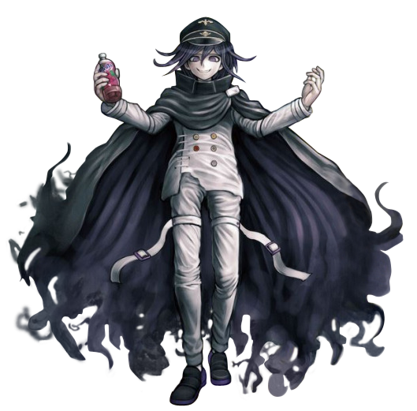

Kokichi Oma
Kokichi Oma (王馬 小吉) is a student in the Ultimate Academy for Gifted Juveniles and a participant of the Killing School Semester featured in Danganronpa V3: Killing Harmony. His title is the Ultimate Supreme Leader (超高校級の「総統」 lit. Super High School Level Supreme Leader).
